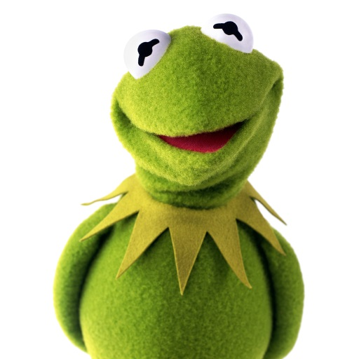

Kermit the Frog
An excerpt from Wikipedia, the free encyclopedia
Kermit the Frog is a Muppet character and Jim Henson's most well-known creation. Introduced in 1955, Kermit serves as the straight man protagonist of numerous Muppet productions, most notably Sesame Street and The Muppet Show, as well as in other television series, films, specials, and public service announcements through the years. Henson originally performed Kermit until his death in 1990; Steve Whitmire performed Kermit from that time up until his dismissal from the role in 2016. Kermit is currently performed by Matt Vogel. He was also voiced by Frank Welker in Muppet Babies and occasionally in other animation projects, and is voiced by Matt Danner in the 2018 reboot of Muppet Babies.
Kermit performed the hit singles "Bein' Green" in 1970 and "The Rainbow Connection" in 1979 for The Muppet Movie, the first feature-length film featuring the Muppets. The latter song reached No. 25 on the Billboard Hot 100. Kermit's iconic look and voice have been recognizable worldwide since, and in 2006, the character was credited as the author of Before You Leap: A Frog's Eye View of Life's Greatest Lessons, which is an "autobiography" told from the perspective of the character himself.
Career
Kermit has been featured prominently on both The Muppet Show and Sesame Street. However, he had a prominent career before Sesame Street's debut in 1969, as he starred in Sam and Friends, and numerous Muppets made guest appearances on Today from 1961 and The Ed Sullivan Show from 1966.
Sesame Street
Kermit was one of the original main Muppet characters on Sesame Street. Closely identified with the show, Kermit usually appeared as a lecturer on simple topics, a straight man to another Muppet (usually Grover, Herry Monster or Cookie Monster), or a news reporter interviewing storybook characters for Sesame Street News. He sang many songs on the show, including Bein' Green, and appeared in the 1998 video The Best of Kermit on Sesame Street.
Unlike the rest of the show's Muppets, Kermit was never any property of Sesame Workshop and has rarely been a part of the show's merchandise. When Sesame Workshop bought full ownership of its characters from the Jim Henson Company for $180 million, Kermit was not included in the deal. The character now belongs to The Muppets Studio, a division of the Walt Disney Company. His first Sesame Street appearance since Disney ownership was in an Elmo's World segment in the show's 40th-season premiere on November 10, 2009.
With the Muppets
In The Muppet Show television series, Kermit was the central character, the showrunner, and the long-suffering stage manager of the theater show, trying to keep order amidst the chaos created by the other Muppets. Jim Henson once claimed that Kermit's job on the Muppet Show was much like his own: "trying to get a bunch of crazies to actually get the job done." It was on this show that the running gag of Kermit being pursued by leading lady Miss Piggy developed.
On Muppets Tonight, Kermit was still a main character, although he was the producer rather than frontman. He appeared in many parody sketches such as NYPD Green, City Schtickers, Flippers, and The Muppet Odd Squad, as well as in the Psychiatrist's Office sketch.
Kermit also served as the mascot for The Jim Henson Company, until the sale of the Muppet characters to Disney. A Kermit puppet can be seen at the National Museum of American History.
Kermit appears in Muppet*Vision 3D, an attraction that opened in 1991 at Disney's Hollywood Studios at Walt Disney World in Lake Buena Vista, Florida. The character was formerly featured at the attraction version in Disney California Adventure Park, at the Disneyland Resort in Anaheim, California, until its closure in 2014. Kermit also appears at the Magic Kingdom at The Muppets Present...Great Moments in American History. He also appeared in two parades; Disney Stars and Motor Cars Parade held at Disney's Hollywood Studios until 2008 and Disney's Honorary VoluntEars Cavalcade that was held during 2010 at the Magic Kingdom and Disneyland.
Filmography
Kermit the Frog has appeared in almost every Muppet production, as well as making guest appearances in other shows and movies.
For a full list and much more information about this respected frog, visit Kermit's Wikipedia page at https://en.wikipedia.org/wiki/Kermit_the_Frog